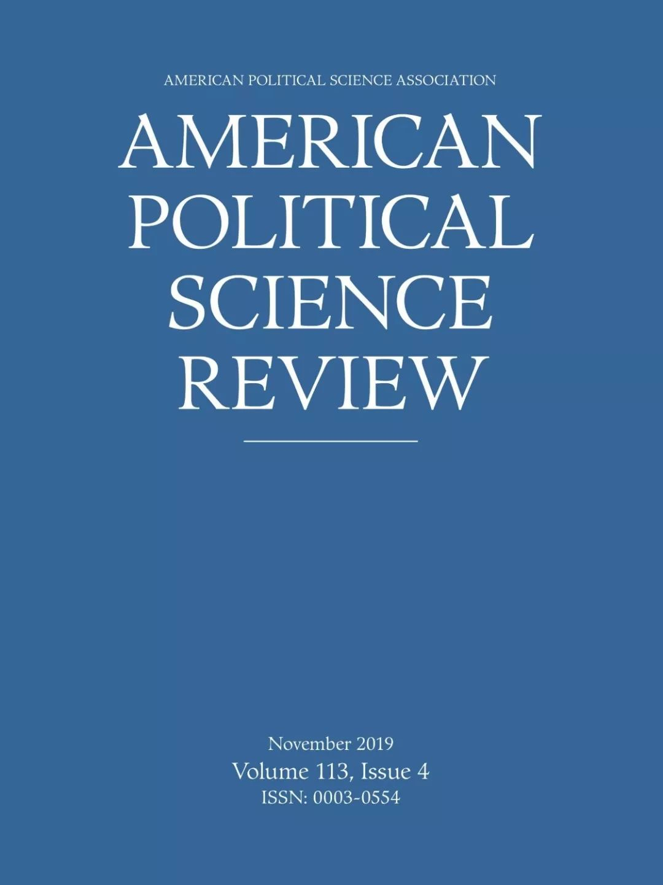

收录于合集
期刊简介： 《美国政治学评论》（American Political Science Review）是美国政治学会（American Political Science Association）旗下最知名的季刊。自1906年创刊并由剑桥大学出版社出版以来，逐步成为政治学最具权威性的期刊之一。内容涉及政治学理论、美国政治、公共政策、公共管理、比较政治、国际关系等。根据Journal Citation Reports显示，其2018年的影响因子为3.895，在176种政治科学类期刊中位列第7位（7/176）。
编者按： 摘要编译主要由政观团队的高校在读硕博研究生自愿组织进行。受学生学识及翻译水平所限，译文可能有诸多不当之处，还望读者理解，也欢迎留言批评指正。受版权所限，需要阅读原文的读者可点击“阅读原文”或通过其他途径自行查阅、下载。
【政文观止Poliview】系头条号签约作者，微信端发布的近期文章内容均可在今日头条app上浏览。
期刊目录
1. 谁领导？谁跟随？运用社交媒体数据测量立法者和大众的议题关注和议程设置
2. 说服敌人：以偏好混合的选择与分配设计评估党派媒体的说服效果
3. 党派还是钱袋？美国参议院中的不平等代表
4. 完美表现：国会演讲的音调与情感强度
5. 更公正的选举会增加政客的回应吗？
6. 为什么一些持续存在的问题能持续存在？
7. 冲突阴影下的投资：全球化、资本管制和国家镇压
8. 暴力抗议能改变当地的政策支持吗？来自1992年洛杉矶暴动的证据
9. 族群暴乱和亲社会行为：来自塔吉克斯坦的证据
10. 大清洗：自上而下的问责制

1. 谁领导？谁跟随？ 运用社交媒体数据
测量 立法者和大众的议题关注和议程设置
题目： Who Leads? Who Follows? Measuring Issue Attention and Agenda Setting by Legislators and the Mass Public Using Social Media Data
作者： Pablo Barber´a ,南加州大学国际关系学院助理教授；Andreu Casas ，纽约大学数据科学中心Moore- Sloan研究员；；Jonathan Nagler，纽约大学Wilf Family政治学系教授；Patrick J.Egan，纽约大学Wilf Family政治学系副教授；Richard Bonneau，纽约大学计算机科学系教授；John T. Jost ，纽约大学心理学系教授；Joshua A. Tucker ，纽约大学Wilf Family政治学系教授
摘要： 立法者是否会回应公众所认为的优先议题？研究发现公众所关心的议题与政客所强调的议题存在较强的一致性，但是关于在政治议程的设置过程中谁引导、谁被引导，仍缺乏确切证据。通过对113届国会期间立法者和公众所发送推特推文的高细粒度时间分析，作者回答了这个问题。通过无监督学习将立法者和公民所发送的推文聚类为几个主题后，作者使用向量自回归模型以探索公民和政客间谁的优先议题更强有力地预测了他们之间的关系。作者发现立法者更有可能跟随而非领导公共议题的讨论。并且即使控制了媒体议程设置的影响，这个结果也不变。但是，作者也发现立法者更有可能去回应他们的支持者而非普遍的大众。
Are legislators responsive to the priorities of the public? Research demonstrates a strong correspondence between the issues about which the public cares and the issues addressed by politicians, but conclusive evidence about who leads whom in setting the political agenda has yet to be uncovered. We answer this question with fine-grained temporal analyses of Twitter messages by legislators and the public during the 113th US Congress. After employing an unsupervised method that classifies tweets sent by legislators and citizens into topics, we use vector autoregression models to explore whose priorities more strongly predict the relationship between citizens and politicians. We find that legislators are more likely to follow, than to lead, discussion of public issues, results that hold even after controlling for the agenda-setting effects of the media. We also find, however, that legislators are more likely to be responsive to their supporters than to the general public.
2. 说服敌人：以偏好混合的选择与分配设计
评估党派媒体的说服效果
题目： Persuading the Enemy: Estimating the Persuasive Effects of Partisan Media with the Preference-Incorporating Choice and Assignment Design
作者： Justin de Benedictis-Kessner，波士顿大学政治学系助理教授；Matthew A. Baum , 哈佛大学肯尼迪政府学院Kalb讲席教授；Adam J. Berinsky ,麻省理工学院政治学系Mitsui讲席教授；Teppei Yamamoto，麻省理工学院政治学系副教授
摘要： 媒体选择是造成了政党极化，抑或仅仅是政党极化的反映？作者研究了这个谜题的关键方面：党派媒体是如何造成不同媒体观众读者之间的极化。作者使用了一种名为“偏好混合的选择与分配（ Preference-Incorporating Choice and Assignment，PICA）”实验设计，这种实验设计混合了自由的选择和强制的接触。作者同时估计了党派媒体的说服效果和选择性接触所造成的极化程度。本文的设计也使得作者能够进行陈述偏好和实际选择之间差异的敏感性分析，这是一项被先前相近研究所忽略的偏差来源。作者发现党派媒体可以极化它的铁杆消费者，也可以极化本来可能不会阅读它的路人消费者。但是，意识形态相反的媒体也可能会缓和消费者之间现有的极化。综上，本文的研究结论深化了我们对媒体什么时候、以及如何极化个体这个问题的认识。
Does media choice cause polarization, or merely reflect it? We investigate a critical aspect of this puzzle: How partisan media contribute to attitude polarization among different groups of media consumers. We implement a new experimental design, called the Preference-Incorporating Choice and Assignment (PICA) design, that incorporates both free choice and forced exposure. We estimate jointly the degree of polarization caused by selective exposure and the persuasive effect of partisan media. Our design also enables us to conduct sensitivity analyses accounting for discrepancies between stated preferences and actual choice, a potential source of bias ignored in previous studies using similar designs. We find that partisan media can polarize both its regular consumers and inadvertent audiences who would otherwise not consume it, but ideologically opposing media potentially also can ameliorate the existing polarization between consumers. Taken together, these results deepen our understanding of when and how media polarize individuals.
3. 党派还是钱袋？
美国参议院中的不平等代表
题目： The Party or the Purse? Unequal Representation in the US Senate
作者： Jeffrey R. Lax, 哥伦比亚大学政治学系教授；Justin H. Phillips, 哥伦比亚大学政治学系教授；Adam Zelizer, 芝加哥大学哈里斯公共政策学院助理教授
摘要： 近期关于美国政策制定问题的研究认为，对民意的回应被金钱所扭曲了，因为富人的诉求比低收入者的诉求重要得多。然而另一种偏差——民意回应中的政党偏差——在有关财富影响的文献中却未被充分研究，或说被忽略和轻视了。本文作者所合作完成的研究，是第一篇试图评估这两种潜在的代表性扭曲的作品。作者通过利用49个州自2001至2015年的唱名投票数据完成本研究。作者发现，财富的影响被夸大了，其影响依赖于党派——当参议员不得不选边站队时，党派的重要性会战胜钱袋。穷人更常从民主党那里得到他们想要的东西；富人则更常从共和党那里得到他们想要的东西，但前提是共和党站在富人这一边。因此，党派因素诱发、塑造并约束着财富的影响。
Recent work on US policymaking argues that responsiveness to public opinion is distorted by money, in that the preferences of the rich matter much more than those of lower-income Americans. A second distortion—partisan biases in responsiveness—has been less well studied and is often ignored or downplayed in the literature on affluent influence. We are the first to evaluate, in tandem, these two potential distortions in representation. We do so using 49 Senate roll-call votes from 2001 to 2015. We find that affluent influence is overstated and itself contingent on partisanship—party trumps the purse when senators have to take sides. The poor get what they want more often from Democrats. The rich get what they want more often from Republicans, but only if Republican constituents side with the rich. Thus, partisanship induces, shapes, and constrains affluent influence.
4. 完美表现：国会演讲的音调与情感强 度
题目： Pitch Perfect: Vocal Pitch and the Emotional Intensity of Congressional Speech
作者： Bryce J. Dietrich，爱荷华大学政治学系助理教授；Matthew Hayes，莱斯大学政治学系助理教授；Diana Z. O’Brien，莱斯大学政治学系副教授
摘要： 尽管许多政治机构都存有录音档案，但这些录音提供的资料很少受到研究人员的关注。然而，录音数据能够提供包括关于发言者情绪状况的信息在内的重要启示。通过利用74,158个国会议员的现场演讲录音——已编译的自然音频的最大合集之一——本文引入了一种测量立法者情绪强度的新变量：音调的微小变化，这种变化对发言者而言很难控制。作者将本文提出的方法应用于国会议员关于女性的发言后发现，相较于男议员以及女议员在其他话题上的发言，女议员在谈论女性时的情绪更为强烈。本文的两项辅助分析表明，议员对更广泛问题的承诺与其音调的提高具有同步性，以及情绪强烈的发言可能会影响其他议员的行为。更宽泛的说，本文通过展示把录音作为数据的研究方法的效用，强调了一种研究政治演讲的新方法。
Although audio archives are available for a number of political institutions, the data they provide receive scant attention from researchers. Yet, audio data offer important insights, including information about speakers’ emotional states. Using one of the largest collections of natural audio ever compiled—74,158 Congressional floor speeches—we introduce a novel measure of legislators’ emotional intensity: small changes in vocal pitch that are difficult for speakers to control. Applying our measure to MCs’ floor speeches about women, we show that female MCs speak with greater emotional intensity when talking about women as compared with both their male colleagues and their speech on other topics. Our two supplementary analyses suggest that increased vocal pitch is consistent with legislators’ broader issue commitments, and that emotionally intense speech may affect other lawmakers’ behavior. More generally, by demonstrating the utility of audio-as-data approaches, our work highlights a new way of studying political speech.
5. 更公正的选举会增加政客的回应吗？
题目： Do Fairer Elections Increase the Responsiveness of Politicians?
作者： George Kwaku Ofosu, 华盛顿大学政治学系博士后研究助理
摘要： 利用新颖的实验设计以及加纳立法人员2160个月的选区发展基金支出(CDF)数据，作者检验了更加公平的选举是否以及如何会促进民主回应。结果显示，在加纳2012年大选期间，从在选举日被随机进行重点监察的选区中选出的议员，在任期内的CDF支出，比从监察较少的选区选出的议员高出19个百分点。无论是来自何种选区的议员，在议会中的发言大致相当，说明更高级别的监察并不会导致政客把议会工作和选区服务一视同仁。对因果机制的检验提供了具有启发性的证据，表明更加公正的选举是通过议员对选举制裁的担忧来促成更高的绩效，而不是通过选出更好的议员。本文为选举正义对民主责任的影响提供了因果证据。
Leveraging novel experimental designs and 2,160 months of Constituency Development Fund (CDF) spending by legislators in Ghana, I examine whether and how fairer elections promote democratic responsiveness. The results show that incumbents elected from constituencies that were randomly assigned to intensive election-day monitoring during Ghana’s 2012 election spent 19 percentage points more of their CDFs during their terms in office compared with those elected from constituencies with fewer monitors. Legislators from all types of constituencies are equally present in parliament, suggesting that high levels of monitoring do not cause politicians to substitute constituency service for parliamentary work. Tests of causal mechanisms provide suggestive evidence that fairer elections motivate high performance through incumbents’ expectations of electoral sanction and not the selection of better candidates. The article provides causal evidence of the impact of election integrity on democratic accountability.
6. 为什么一些持续存在的问题能持续存在？
题目： Why Some Persistent Problems Persist
作者： Robert Powell, 加州大学伯克利分校政治学系教授
摘要： 近期对镇压叛乱、附庸国、对外援助以及代理人战争的研究采用“委托- 代理”的框架来探究委托方诱使代理方为（维护）委托人的利益而努力的能力。本研究概括性地强调了道德风险问题以及行动者有限的承诺能力。后者通常是通过重复博弈的逻辑来解决的，在这种博弈中，违反协议的行动者将会在未来受到惩罚。本研究分析了一个与此相关的激励问题，这一问题削弱了委托方诱使代理方为（维护）委托方的利益而努力的能力。在以下情形中，重复博弈的执行机制可能会失效：如果委托方试图让代理方去解决一个问题，如果这个问题被解决，那么将（1）给代理方创造了一个持续存在的问题以及（2）同时会显著降低代理方对委托人施加未来成本的能力。在这些情况下，委托方无法诱导代理方为（维护）委托方的利益而作出很大努力，问题得以持续存在。
Recent work on counter-insurgency, client states, foreign aid, and proxy wars uses a principal–agent framework to study the principal’s ability to induce an agent to exert effort on the principal’s behalf. This work broadly emphasizes the moral hazard problem and the actors’ limited commitment power. The latter is usually addressed through the logic of repeated games in which reneging on an agreement triggers future punishment. This study analyzes a related incentive problem that undermines the principal’s ability to induce an agent to exert effort on its behalf. The repeated-game’s enforcement mechanism tends to break down if the principal is trying to get the agent to resolve a problem that, if resolved, (i) creates an ongoing problem for the agent and (ii) simultaneously significantly reduces the agent’s ability to impose future costs on the principal. The principal cannot induce the agent to exert much effort in these circumstances, and the problem persists.
7. 冲突阴影下的投资：全球化、
资本管制 和国家镇压
题目： Investment in the Shadow of Conflict: Globalization, Capital Control, and State Repression
作者： Mehdi Shadmehr，卡尔贝里大学经济学系副教授
摘要： 在易发生冲突的社会，担心因政权更迭导致的财产掠夺抑制了资本投资。投资的减少反过来又损害了经济，增加了政权更迭的可能性。本文研究了这些反馈机制对全球化、资本管制、国家压制和政权更迭之间相互作用的影响。本文表明，促进资本流动的进程（例如全球化、经济现代化和降低运输成本的技术）扩大了易发生冲突的社会出现政权更迭的可能性，并加强了精英阶层对一个强大的压制性国家的需求。资本家会支持实行资本管制的国家，特别是为了克服精英阶层的集体行动难题和管控政权更迭的政治风险。本文指出了两种相互冲突的效应，鲍什效应和马克思效应，这两种效应决定了在右翼政权中资本控制和国家压制之间是互补（纳粹德国）还是替代关系（拉美军事政权）。
In conflict-prone societies, the fear of expropriation that accompanies a regime change reduces capital investment. These reductions in investments, in turn, harm the economy, amplifying the likelihood of regime change. This article studies the implications of these feedback channels on the interactions between globalization, capital control, state repression, and regime change. I show that processes that facilitate capital movements (e.g., globalization, economic modernization, and technologies that reduce transportation costs) amplify the likelihood of regime change in conflict- prone societies and strengthen the elite’s demand for a strong coercive state. In particular, to limit their collective action problem and manage the political risk of regime change, capitalists support a state that imposes capital control. We identify two conflicting forces, the Boix Effect and the Marx Effect, which determine when capital control and state repression become complements (Nazi Germany) or substitutes (Latin American military regimes) in right-wing regimes.
8. 暴力抗议能改变当地的政策支持吗？
来自1992年洛杉矶暴动的证据
题目： Can Violent Protest Change Local Policy Support? Evidence from the Aftermath of the 1992 Los Angeles Riot
作者： Ryan D. Enos, 哈佛大学政府系教授；Aaron R. Kaufman, 纽约大学社会科学部助理教授；Melissa L. Sands, 加州大学默塞德分校政治学系助理教授
摘要： 暴力抗议是引人注目的政治事件，但是我们对这些事件对政治行为的影响知之甚少。虽然学者们通常将暴力抗议视作为追求特定目标而采取的蓄意行为，但由于缺乏合适的数据和在认定因果关系时的困难，很少有证据表明暴乱是否真的能增加对这些目标的支持。利用地理编码数据，作者分析了1992年洛杉矶暴动前后的政策支持措施。洛杉矶暴动发生在选举前夕，是美国近代历史上最引人注目的政治暴力事件之一。与学术文献和大众媒体的一些预期相反，作者发现这次暴动导致了人们在民意调查中明显转向支持自由主义政策。调查这种转变的来源，作者发现这可能是对非裔美国人和白人选民动员力度加大的结果。引人注目的是，这种动员持续了十多年。
Violent protests are dramatic political events, yet we know little about the effect of these events on political behavior. While scholars typically treat violent protests as deliberate acts undertaken in pursuit of specific goals, due to a lack of appropriate data and difficulty in causal identification, there is scant evidence of whether riots can actually increase support for these goals. Using geocoded data, we analyze measures of policy support before and after the 1992 Los Angeles riot—one of the most high-profile events of political violence in recent American history—that occurred just prior to an election. Contrary to some expectations from the academic literature and the popular press, we find that the riot caused a marked liberal shift in policy support at the polls. Investigating the sources of this shift, we find that it was likely the result of increased mobilization of both African American and white voters. Remarkably, this mobilization endures over a decade later.
9. 族群暴乱和亲社会行为：
来自塔吉克斯坦的证据
题目： Ethnic Riots and Prosocial Behavior: Evidence from Kyrgyzstan
作者： Anselm Hager, 洪堡大学国际政治系助理教授；Krzysztof Krakowski, 卡洛·阿尔贝托学院博士后；Max Schaub，柏林社会科学研究中心研究员
摘要： 族群暴乱会影响亲社会行为吗？研究种族暴力的学者有一个共识是，尽管暴乱降低了跨族群间的合作，但是增加了交战族群内部的合作。本文通过研究2010年吉尔吉斯斯坦奥什暴乱的后果来重新检验这一假设，那次暴乱导致400多名乌兹别克人命丧于来自奥什郊外的吉尔吉斯人之手。本文实施了一项具有代表性的调查，其中包括对亲社会行为的无干扰实验测量。本文利用了社区与装甲车部队之间距离的不同来进行因果识别，装甲车部队在这场精心策划的暴乱中起到了重要作用。本文发现受害社区的亲社会行为水平明显较低。重要的是，本文证明，无论是在族群内部还是族群之间，这种减少都是同样明显的。通过定性访谈，本文分析出有助于解释族群内部亲社会行为大量减少的两种机制：受害的乌兹别克人感到被他们的同胞所抛弃，受害情况的不同造成了族群内部的怀疑。
Do ethnic riots affect prosocial behavior? A common view among scholars of ethnic violence is that riots increase cooperation within the warring groups, while cooperation across groups is reduced. We revisit this hypothesis by studying the aftermath of the 2010 Osh riot in Kyrgyzstan, which saw Kyrgyz from outside the city kill over 400 Uzbeks. We implement a representative survey, which includes unobtrusive experimental measures of prosocial behavior. Our causal identification strategy exploits variation in the distance of neighborhoods to armored military vehicles, which were instrumental in orchestrating the riot. We find that victimized neighborhoods show substantially lower levels of prosocial behavior. Importantly, we demonstrate that the reduction is similarly stark both within and across groups. Using qualitative interviews, we parse out two mechanisms that help explain the surprising reduction in ingroup prosociality: Victimized Uzbeks felt abandoned by their coethnics, and variation in victimization created a feeling of suspicion.
10. 大规模清洗：自上而下的问责制
题目： Mass Purges: Top-Down Accountability in Autocracy
作者： B. Pablo Montagnes，埃默里大学政治学系助理教授；Stephane Wolton，伦敦经济学院政府学系副教授
摘要： 本文提出了一个新的理论框架来研究威权国家中大规模清洗的特征。作者认为大规模清洗是一种自上而下的问责手段，旨在动员和审查众多代理者（如一党制下的党员、国家官僚）。本文证明了在较为温和的清洗中，被清洗的代理者得到较好的处置，而在较为剧烈的清洗中，没有任何绩效指标是安全的保证。被清洗的代理者在暴力强度中的比例是非单调的。对极权者而言，提高暴力的强度总是能提高绩效；但是只有在初始暴力程度很低的情况下，提高暴力强度才能改进下属的选择。因此，即使没有法律制约，威权统治者实际上也会受其下属的策略性行为的约束。本文通过历史（包括苏联大清洗等）和最近的事件（埃尔多安清洗）来解释作者的核心理论发现。
This paper proposes a novel theoretical framework to study the features of mass purges in authoritarian regimes. We contend that mass purges are an instrument of top-down accountability meant to motivate and screen a multitude of agents (e.g., single-party members, state bureaucrats). We show that the set of purged agents is well delineated in mild purges, whereas no performance indicator is a guarantee of safety in violent purges. The proportion of purged agents is non-monotonic in the intensity of violence. For the autocrat, increasing the intensity of violence always raises performance, but it improves the selection of subordinates only if violence is low to begin with. Hence, even absent de jure checks, the autocrat is de facto constrained by her subordinates’ strategic behavior. We use historical (including the Soviet purges and the Cultural Revolution) and recent (the Erdogan purge) events to illustrate our key theoretical findings.
编译：康张城、施榕、殷昊、赵德昊、吴温泉
编辑：康张城